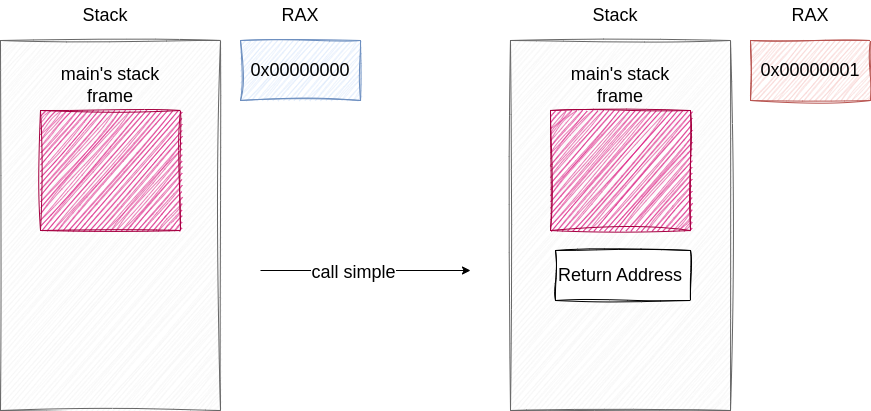
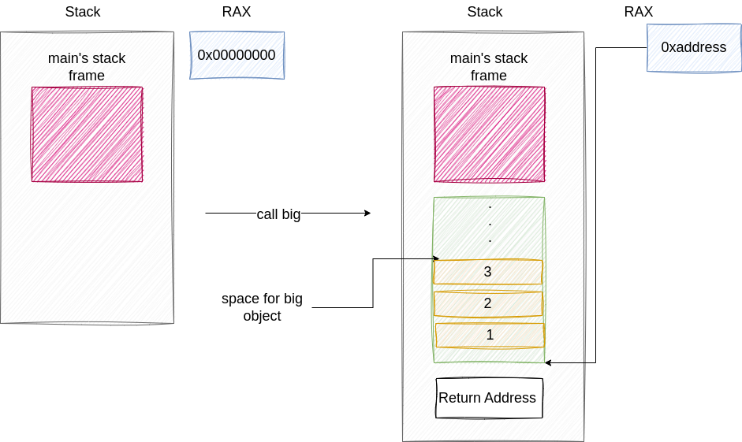
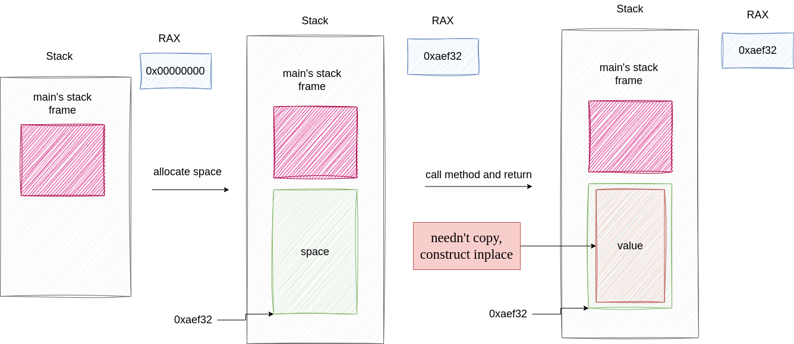
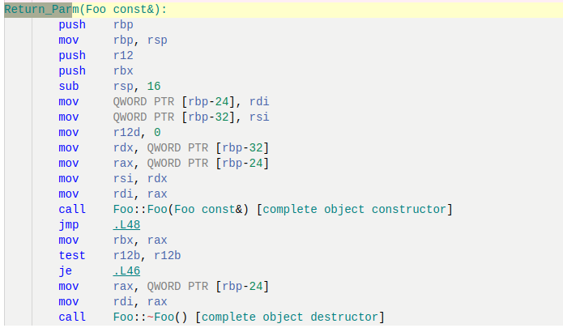
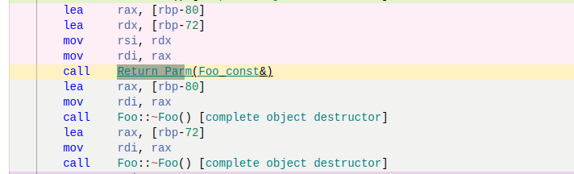
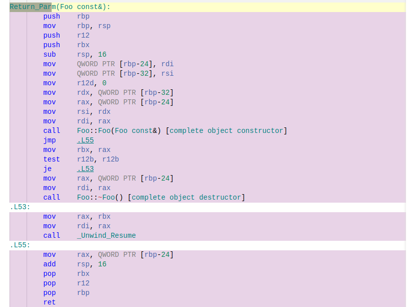
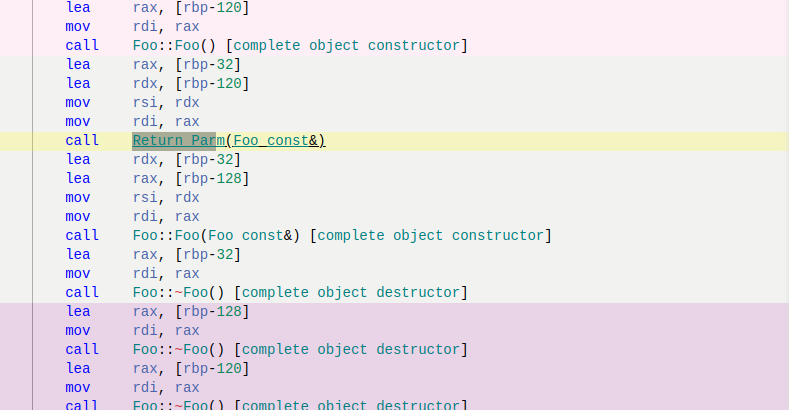
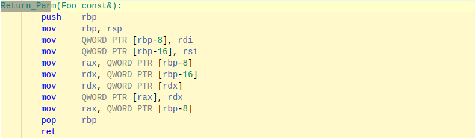
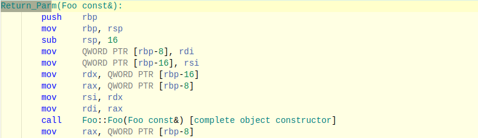
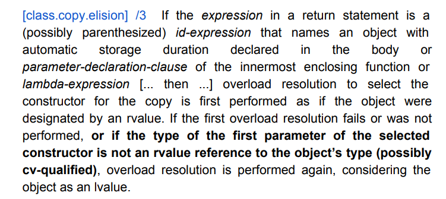

Return Value optimization
Return Value Optimization ---- 汇编视角
之所以写这篇文章是因为在油管上看了Jon Kalb在2018年的CppCon上做的演讲，深受启发，决定换一个视角来审视C++的RVO机制。
1. calling conventions
1.1 返回值为int, float....
上述的代码经过编译后得到的汇编代码如下所示
simple():
push rbp
mov rbp, rsp
mov eax, 1
pop rbp
ret
main:
push rbp
mov rbp, rsp
call simple()
add eax, 1
pop rbp
ret
因为是RVO，所以我们只关心 return value，我们可以发现simple中的一条汇编语句move eax 1,这条语句对应于simple中的return 1;也就是说在C++中，我们会将需要返回的值存在rax寄存器中。当然前提是rax可以放下需要返回的值。
1.2 返回值为struct类型
如果返回值为struct类型，也就是rax不一定可以放的下该类型应该怎么办？
观察下面的代码
struct BigObject {
int data[6];
};
BigObject big() {
return BigObject{1,2,3,5,6,7};
}
int main() {
BigObject bo = big();
return 0;
}
该代码经过编译后得到的汇编代码如下所示
big():
push rbp
mov rbp, rsp
mov QWORD PTR [rbp-8], rdi
mov rax, QWORD PTR [rbp-8]
mov DWORD PTR [rax], 1
mov rax, QWORD PTR [rbp-8]
mov DWORD PTR [rax+4], 2
mov rax, QWORD PTR [rbp-8]
mov DWORD PTR [rax+8], 3
mov rax, QWORD PTR [rbp-8]
mov DWORD PTR [rax+12], 5
mov rax, QWORD PTR [rbp-8]
mov DWORD PTR [rax+16], 6
mov rax, QWORD PTR [rbp-8]
mov DWORD PTR [rax+20], 7
mov rax, QWORD PTR [rbp-8]
pop rbp
ret
main:
push rbp
mov rbp, rsp
sub rsp, 32
lea rax, [rbp-32]
mov rdi, rax
call big()
mov eax, 0
leave
ret
我们可以看到仍旧是将返回值存入rax中，只不过这里的rax更像是一个指针，通过offset将对应的值存入mov DWORD PTR [rax+4], 2
整个调用过程我们用两张图来进行总结


整个调用过程就算不太了解也没有关系，我们只需要记住函数的返回值一定是存在rax中，区别在于是把rax当作int这种标量，还是当作指针对待。
2 使用RAX实现RVO
RVO实际上就是在函数返回时，将原本需要进行的拷贝操作省略掉，那么怎么实现呢？通过上面的描述，我们知道返回值实际都在rax中，那么只要我们在调用函数前，自己开辟一块空间（在栈帧中），然后将这块空间的地址给到 rax，等到函数返回时，我们就无须对返回的临时变量进行拷贝，因为返回值已经在rax（我们开辟的空间）中了，我们可以直接使用。
还是用一张图来总结这个过程。

3.RVO 的适用场景
当粗略的了解了RVO的实现原理后，我们便可以，从另一种视角对RVO的适用场景进行审视。
3.1 unamed rvo 
这种场景下，因为整个返回值都是临时变量，所以我们可以直接在开辟的空间中进行构造，无需拷贝。因此这种场景下，RVO是可以被使用的。
3.1 named rvo
这种场景下，返回值是一个局部变量，但是我们可以在开辟的空间中直接对局部变量进行构造。因此这种场景下，RVO是可以被使用的。
3.3 named rvo with compile-time condition
Foo NRVO_Compile_BRANCH(int x) {
Foo foo;
if (x % 2 == 0) {
return foo;
} else {
return foo;
}
}
Foo foo = NRVO_Compile_BRANCH();
这种场景下，返回值是一个局部变量，并且不论条件变量如何，我们都明确只返回那一个局部变量(编译期即可确定)，因此我们可以直接在开辟的空间中构造局部变量，rvo适用。
3.4 named rvo with run-time condition 
Foo NRVO_RUNTIME_BRANCH(int x) {
Foo foo, foo1;
if (x % 2 == 0) {
return foo;
}
return foo1;
}
Foo foo = NRVO_RUNTIME_BRANCH();
这种场景下，我们有两个局部变量，且这两个局部变量都有可能成为返回值，只有在runtime我们才能确定，因此我们无法直接在开辟的空间中进行构造（因为只有运行到return时，我们才知道那一个是返回值，而这时候该值早就已经构造好了）,只能通过拷贝构造函数进行生成，rvo不适用。
3.5 return global variable
尽管很多博客文章都说这种场景下，不会使用RVO，但是经过测试结果显示，虽然我们返回的是全局变量，该变量早就已经构造完成，有它专属的物理地址，但是我们依然可以在返回地址处直接使用拷贝构造函数进行生成。rvo适用。
以下是我做的实验
struct Foo {
Foo() : data(0), id(++version) {
++object_create;
cout << "Foo ctor, version :" << id << endl;
}
Foo(const Foo &rhs) : data(rhs.data), id(++version), aaaa(rhs.aaaa) {
++object_create;
cout << "Foo copy ctor, version: " << rhs.id << " -> " << id << endl;
}
Foo &operator=(const Foo &rhs) {
data = rhs.data;
cout << "Foo copy assign version: " << rhs.id << " -> " << id << endl;
return *this;
}
~Foo() { cout << "Foo destory version: " << id << endl; }
/* data */
int data;
int id;
};
Foo global_foo;
Foo foo1 = Global_FOO();
---------------------------------------------------------------
g++ -o enable -O0 -std=c++98 & ./enable
Foo copy ctor, version: 1 -> 1
Foo destory version: 1
create 1 objects
g++ -o disable -O0 -std=c++98 -fno-elide-constructors & ./disable
Foo copy ctor, version: 1 -> 1
Foo copy ctor, version: 1 -> 2
Foo destory version: 1
Foo destory version: 2
create 2 objects
可以看到开启rvo时的确少调用一次拷贝构造函数,当然其实这也可以认为是对unamed的rvo优化，而不是global的。
3.6 return parameter
这种场景下，和上一个场景很相似，尽管都需要对参数进行一次拷贝，但是RVO可以在返回时进行优化直接拷贝到新开辟的空间中，从而相比与禁止RVO少调用一次拷贝构造函数。
这次我们通过汇编代码进行论证
开启RVO的汇编代码


可以看到整个过程中仅仅只调用了一次拷贝构造函数。
关闭RVO的汇编代码


可以看到一共调用了两次拷贝构造函数，这证明了RVO确实在发生作用。
3.7 return by move
这个没有什么好说的，C++标准不允许，当你使用std::move时，会禁用RVO。
3.8 一个没啥用的发现
当你的class没有自己写拷贝构造函数，并且里面的成员变量都是没有自己定义的拷贝构造函数，这时候开启RVO，编译器甚至不会给你生成拷贝构造函数。
测试代码
struct Foo {
Foo() : data(0), id(++version) {
++object_create;
cout << "Foo ctor, version :" << id << endl;
}
// Foo(const Foo &rhs) : data(rhs.data), id(++version) {
// ++object_create;
// cout << "Foo copy ctor, version: " << rhs.id << " -> " << id << endl;
// }
// Foo &operator=(const Foo &rhs) {
// data = rhs.data;
// cout << "Foo copy assign version: " << rhs.id << " -> " << id << endl;
// return *this;
// }
~Foo() { cout << "Foo destory version: " << id << endl; }
/* data */
int data;
int id;
// std::vector<int> vec;
};
开启RVO生成的汇编代码

可以看到完全就是寄存器和堆栈的运算。
当你关闭RVO，生成的汇编代码

编译器会为你生成拷贝构造函数，并且被调用。
但如果你的class没有自己写拷贝构造函数，并且里面的成员变量都是没有自己定义的拷贝构造函数这两个条件有一个没满足，编译器都会为你生成拷贝构造函数。
总结，RVO只要被开启，当你返回时基本总是会被使用，即直接在开辟的新空间中直接进行生成，从而节省了一次拷贝。但对于某些特殊的情况，例如返回参数，返回全局变量时，对这种对象的拷贝是无法被省略的。
RVO与std::move
当std::move参与到rvo时，情况又会有点微妙。
先说一个非常一般，并且绝大多数都对的结论，当class可以被move，那么当你返回时，如果可以直接构造那么直接构造，如果不能，调用移动构造函数
其实用一句话说，你return的值会被当作右值处理，要么使用RVO，要么使用移动构造函数，但也有例外。
我们先看官网文档

注意这里加粗的意思是说如果我们return的类型和函数申明的返回类型对不上，那么就会把返回值看作左值也就是会调用拷贝构造函数。例如
struct Foo {
Foo() : data(0), id(++version) {
++object_create;
cout << "Foo ctor, version :" << id << endl;
}
Foo(const Foo &rhs) : data(rhs.data), id(++version), aaaa(rhs.aaaa) {
++object_create;
cout << "Foo copy ctor, version: " << rhs.id << " -> " << id << endl;
}
Foo(Foo &&rhs) : data{rhs.data}, id{++version} {
cout << "Foo move ctor, version: " << rhs.id << " -> " << id << endl;
}
Foo &operator=(const Foo &rhs) {
data = rhs.data;
cout << "Foo copy assign version: " << rhs.id << " -> " << id << endl;
return *this;
}
Foo &operator=(Foo &&rhs) {
data = rhs.data;
cout << "Foo move assign version: " << rhs.id << " -> " << id << endl;
return *this;
}
~Foo() { cout << "Foo destory version: " << id << endl; }
/* data */
int data;
int id;
Complex complex;
std::vector<int> aaaa;
};
struct FOOS : public FOO {
}
FOO return_derived() {
FOOS foos;
return foos; // treat is as lvalue
}
因为FOOS并不完全是FOO，所以与FOO(FOO &&rhs)对不上，因此会将返回值视作左值，导致RVO，move都无法使用。
至此，我对于RVO的总结就全部完成了。